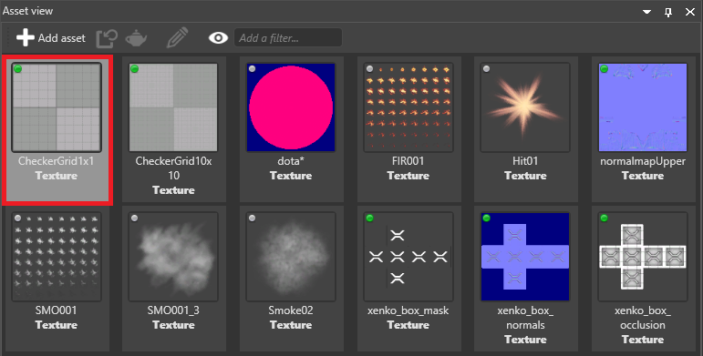

ストリーミング
初級 アーティスト プログラマー
テクスチャーをストリーム化すると、Stride は必要なときだけテクスチャーをロードするようになります。これにより、ゲームやシーンの読込みにかかる時間が大幅に短縮され、メモリの使用量も少なくなり、ゲームのスケールアップが簡単になります。
Note
今のところ、テクスチャーでのみストリーム化が可能です。
Stride でのテクスチャーのストリーミング方法
シーンを読み込む際にテクスチャーを（そのすべてのミップマップと一緒に）読み込む代わりに、Stride はテクスチャーが使用されたとき（例えばそのテクスチャーを使用するモデルが画面上にあるとき）にのみテクスチャーを読込みます。
テクスチャーが不要になる（つまりそのテクスチャーを使用するオブジェクトが画面上にない）と、Stride はそのテクスチャーを解放します。
今のところ、テクスチャーの読み込みに優先順位はありません。例えば、Stride は距離に応じてテクスチャーを読み込んだりすることはなく、すべてのテクスチャーを順番に読み込みます。
ミップマップでストリーミングを使う
テクスチャーのプロパティでミップマップ（距離に応じて表示される異なる解像度のテクスチャー）が有効になっていると、解像度の低いミップマップの方がサイズが小さいため、先に読み込まれます。下の図は、このプロセスが行われている様子をスローモーションで示しています。

ほとんどの場合、このプロセスは非常に迅速に行われます。ストリーミングでは、ミップマップを有効にすることをお勧めします。ミップマップを有効にすると、高品質バージョンが読み込まれるまでの間、低解像度バージョンのテクスチャーがプレースホルダーとして機能するため、ポップインを減らすことができます。
ストリーミングを使わないほうがいい場合
ストリーミングは、既定ではすべてのテクスチャーに対して有効です。しかし、以下のように、常にすぐ高品質で表示させたい重要なテクスチャーについては、ストリーミングを無効にするとよいでしょう。
テクスチャーのストリーミングの有効化または無効化
アセットビューで、テクスチャーを選択します。

プロパティグリッドで、[Format] の下の [Stream] をオンにします。

グローバル ストリーミング設定
グローバルストリーミング設定には、ゲーム設定アセットからアクセスできます。これらの設定は、ストリーミングを有効にしているすべてのテクスチャーに適用されます。
グローバルストリーミング設定へのアクセス方法については、ゲームの設定を参照してください。
プロパティ

| プロパティ | 説明 |
|---|---|
| Streaming | オンにすると、ストリーミングが有効になります。 |
| Update interval | Stride がストリーミングを更新する頻度。間隔が小さいほどストリーミングシステムの反応は速くなりますが、より多くの CPU を使用し、メモリの変動も大きくなります。 |
| Max resources per update | ストリーミングの更新ごとにロードまたはアンロードされるテクスチャーの最大数です。数値が大きいほどポップインは減少しますが、フレームレートが低下する可能性があります。 |
| Resource timeout (ms) | リソースが使われなくなった後、どのくらいの時間ロードされ続けるか（Memory budget プロパティの値を超えた場合に） |
| Memory budget (in MB) | ストリーミングで使用するメモリがこの値を超えると、Stride は未使用のテクスチャーを解放します。この値を増やすと、メモリに余裕があるときにはより多くのテクスチャーを読み込んでおくことができ、その逆も可能です。 |
コードからストリーミングマネージャーにアクセスする
Stride.Streaming を使用します。
例えば、グローバルにストリーミングを無効にする方法は次の通りです。
Streaming.EnableStreaming = false;
テクスチャーのストリーミングを開始する方法は次の通りです。
Streaming.StreamResources(myTexture);
読み込んだ後にストリーミングを無効にする方法は次の通りです。
var texture = Content.Load<Texture>("myTexture", ContentManagerLoaderSettings.StreamingDisabled);
オプション
3 つの StreamingOptions があります。
KeepLoadedオプションは、メモリバジェットを超えても、テクスチャーをメモリに維持します。ミップマップが有効な場合、
ForceHighestQualityオプションはテクスチャーの最高品質のバージョンのみを読込みます。KeepLoadedオプションは、テクスチャーが使用されていないときでも、メモリ内にテクスチャーを維持します。
例：
var myOptions = new StreamingOptions() { KeepLoaded = true };
Streaming.StreamResources(myTexture, myOptions);
実行時に StreamingOptions を変更するには、SetResourceStreamingOptions を使います。例えば、次のようになります。
var myNewOptions = new StreamingOptions() { KeepLoaded = false };
Streaming.SetResourceStreamingOptions(myTexture, myNewOptions);